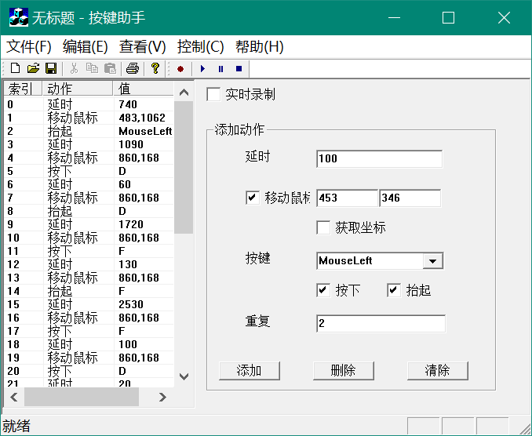

按键助手
文章目录

简介
一个类似于按键精灵的程序，能够录制鼠标和键盘的动作，定义和编辑动作，播放动作。
技术
这个程序还是中学时期写的，那个时候对程序非常感兴趣，自学了一些C++便觉得自己可以写一些东西出来。虽然当时水平比较低，但是完全能够凭着热情去完成每一个程序。那个时候很喜欢写跟界面有关的东西，认知也停留在桌面应用上面，以为程序就是用来开发桌面应用的。
这个程序采用MFC框架实现GUI，利用Windows API捕获鼠标键盘事件，并模拟鼠标键盘的动作。
环境
- Visual Studio 2017
- MFC
文章作者
上次更新 2008年10月12日